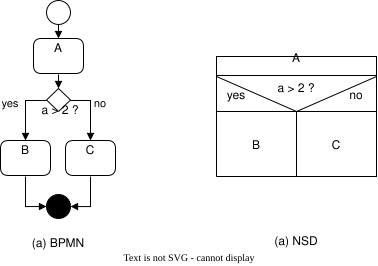
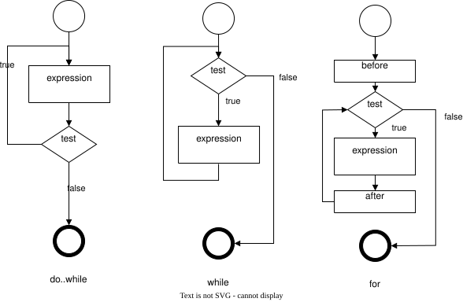

Structures de contrôle¤
Tout problème informatique peut être résolu en introduisant un niveau d'indirection supplémentaire.
Les structures de contrôle constituent un pilier des langages de programmation impératifs et structurés. Elles autorisent la modification de l'ordre des opérations lors de l'exécution du code. On distingue traditionnellement les catégories suivantes :
- Les séquences
-
On définit comme séquences les instructions qui s'exécutent les unes après les autres. Elles peuvent être jalonnées explicitement par un délimiteur de fin d'instruction, implicitement par un point de séquence ou regroupées dans un bloc. On peut distinguer trois types de séquences :
- les séquences de code (
;) ; - les blocs de code (
{}) ; - les points de séquences.
- les séquences de code (
- Les sélections ou sauts
-
Il existe des instructions qui permettent de modifier le flux d'exécution du programme, c'est-à-dire de se diriger vers une autre partie du code. Les sauts conditionnels dépendent d'une condition, tandis que les sauts inconditionnels sont toujours exécutés. On peut distinguer les instructions de saut suivantes :
- sauts conditionnels (
if,switch) ; - sauts inconditionnels (
break,continue,goto,return).
- sauts conditionnels (
- Les itérations ou boucles
-
Une boucle est une structure de contrôle qui permet de répéter une instruction ou un bloc d'instructions tant qu'une condition est vraie. On peut distinguer les familles de boucles suivantes :
- boucles itératives sur une valeur connue
for; - boucles sur condition
while; - boucles sur condition avec test à la fin
do...while.
- boucles itératives sur une valeur connue
Sans structure de contrôle, un programme se comporterait toujours de la même manière et ne pourrait pas réagir aux événements extérieurs, faute de pouvoir modifier conditionnellement son flux d'exécution. L'intelligence d'un programme réside donc dans sa capacité à prendre des décisions en fonction de l'état du système et des données qu'il manipule. Les structures de contrôle définissent précisément ces décisions, à la manière d'un livre dont vous êtes la personne héroïne, où chaque choix vous conduit vers une page distincte.
Historiquement, les premiers langages de programmation ne disposaient pas de structures de contrôle élaborées. Au niveau assembleur, il est possible d'être Turing complet avec seulement deux types de sauts : l'inconditionnel (jmp) et le conditionnel jz (jump if zero : saut si la valeur de la condition est nulle). Avec plus d'un demi-siècle de recul et des milliers de langages conçus, la programmation impérative a finalement peu évolué. Les structures de contrôle sont restées similaires ; seules les syntaxes ont changé. Certains langages comme Python ont même décidé de simplifier certaines structures, en supprimant par exemple le do...while.
On peut néanmoins citer certaines fonctions d'ordre supérieur en programmation fonctionnelle (p. ex. map, filter, reduce) qui permettent de manipuler des séquences de données sans utiliser de boucles explicites. Ces fonctions sont souvent plus expressives et plus sûres que les boucles traditionnelles, mais elles ne remplacent pas les structures de contrôle classiques et elles n'existent pas en C. Les monades en Haskell sont un autre exemple de mécanismes avancés permettant de gérer les effets de bord de manière sûre et contrôlée. Des langages comme Kotlin ou JavaScript ont introduit des concepts similaires, tels que les coroutines ou les promesses, pour gérer de manière asynchrone des tâches longues, mais une fois de plus ce sont des concepts absents du langage C.
Séquences¤
En informatique, une séquence représente la forme la plus fondamentale de structure de contrôle dans les langages de programmation impératifs. Elle définit un ordre d'exécution linéaire où les instructions sont exécutées les unes après les autres, suivant l'ordre dans lequel elles apparaissent dans le code source. Cette exécution séquentielle est essentielle pour garantir la prévisibilité et la cohérence du comportement d'un programme.
Formellement, une séquence peut être vue comme une composition de plusieurs instructions élémentaires \(S_1 ; S_2 ; \dots ; S_n\), où chaque instruction \(S_i\) est exécutée après la précédente. Dans ce modèle, le flux de contrôle passe implicitement d'une instruction à la suivante sans interruption, sauf si une structure de contrôle (comme une boucle ou une condition) modifie ce flux.
La notion de séquence est au cœur de la programmation structurée, qui préconise l'utilisation de structures de contrôle bien définies (séquences, sélections, itérations) pour améliorer la lisibilité, la maintenabilité et la fiabilité du code. En évitant les sauts non structurés comme le goto, les programmes deviennent plus faciles à comprendre et à vérifier formellement.
En pratique, les séquences en code source sont souvent délimitées par des symboles spécifiques ou des conventions syntaxiques propres au langage. Par exemple : en C, les instructions se terminent par un point-virgule ; et les blocs de code sont délimités par des accolades {} ; en Python, l'indentation définit les blocs et chaque instruction est généralement écrite sur une nouvelle ligne.
Il est important de noter que même si les séquences représentent l'exécution linéaire de code, elles peuvent contenir des appels à des fonctions ou des procédures qui encapsulent elles-mêmes des structures de contrôle plus complexes. Ainsi, la séquence constitue le fondement sur lequel sont bâties les constructions plus élaborées d'un programme.
Au sein d'une même fonction (ou d'un même bloc de code) on retrouve l'ordre séquentiel des instructions :
int main() {
/* 1 */ int a = 5;
/* 2 */ int b = 10;
/* 3 */ int sum = a + b;
/* 4 */ printf("%d\n", sum);
}
Séquences de code¤
En C, chaque instruction est séparée de la suivante par un point-virgule ; (003B). Ce caractère fait office de délimiteur d'instruction. Le retour à la ligne n'est pas un délimiteur, mais un simple séparateur visuel qui améliore la lisibilité du code. Il est donc possible d'écrire plusieurs instructions sur une seule ligne :
#include <stdio.h> // doit être sur une seule ligne
int main() { char hello[] = "hello"; printf("%s, world", hello); return 42; }
Seuls les directives du préprocesseur (qui commencent par #) et les commentaires de lignes (//) dépendent du retour à la ligne.
Le point-virgule grec
Ne confondez pas le point-virgule ; (003B) avec le ; (037E), point d'interrogation grec (ερωτηματικό). Certain·es farceur·ses s'amusent à le substituer dans le code de leurs camarades, ce qui provoque invariablement des erreurs de compilation.
Séquence bloc¤
Une séquence bloc, ou instruction composée (compound statement), est une suite d'instructions regroupées dans un bloc matérialisé par des accolades {} :
Il est possible d'ajouter autant de blocs que souhaité, mais il est recommandé de ne pas les imbriquer de manière excessive. Un bloc constitue une unité de code traitée comme une seule instruction, mais il n'est pas suivi d'un point-virgule.
Il est possible de déclarer des variables locales dans un bloc ; ces variables ne sont accessibles que dans ce bloc précis. L'exemple suivant montre plusieurs variables locales dont la visibilité est limitée à leur bloc respectif :
{
int a = 1;
{
int b = 2;
{
int c = 3;
}
// c n'est pas accessible ici
}
// b et c ne sont pas accessibles ici
}
// a, b et c ne sont pas accessibles ici
Limites de profondeur
Le standard C99 §5.2.4.1 impose qu'un compilateur C doit supporter au moins 127 niveaux d'imbrication de blocs, ce qui est amplement suffisant. Cette valeur n'a pas été introduite par hasard : 127 est la valeur maximale d'un entier signé sur 8 bits (char) et les ordinateurs ne manipulent pas efficacement des types de données plus petits.
Ceci étant, le nombre d'imbrications de structures conditionnelles est limité à 63, ce qui est déjà considérable. Si vous avez besoin de plus de 63 niveaux, il est temps de revoir votre conception !
Notons néanmoins que les compilateurs modernes ne limitent pas le nombre d'imbrication de blocs et de structures conditionnelles.
Point de séquence¤
Points de séquence¤
Un point de séquence , ou sequence point, est une notion définie dans l'annexe du standard C, qui garantit que certains ordres d'évaluation sont respectés lors de l'exécution d'instructions. En d'autres termes, un point de séquence marque un moment où tous les effets secondaires d'expressions précédentes doivent être achevés avant d'entamer l'évaluation d'expressions suivantes.
Les règles relatives aux points de séquence sont les suivantes :
- Appel de fonction
-
L'évaluation des arguments d'une fonction est entièrement terminée avant l'exécution de cette fonction elle-même. Autrement dit, l'ordre d'évaluation des arguments peut être indéterminé, mais tous les arguments doivent être évalués avant l'appel de la fonction.
- Opérateurs conditionnels et logiques
-
Les opérateurs
&&,||,? :, et,introduisent des points de séquence entre leurs opérandes. Par exemple, dans l'expressiona() && b(), sia()retournefalse,b()ne sera jamais évaluée, car le résultat global de l'expression est déterminé sans avoir besoin de calculerb(). Ce mécanisme, appelé « court-circuit », optimise le traitement logique. - Entrées-sorties
-
Un point de séquence est présent avant et après toute opération d'entrée/sortie (I/O). Cela garantit que les effets liés à ces opérations, comme l'écriture sur un fichier ou l'affichage à l'écran, se produisent dans un ordre prévisible.
Il est essentiel de noter que l'opérateur d'affectation = n'est pas un point de séquence. Par conséquent, l'évaluation d'une expression telle que (a = 2) + a + (a = 2) est indéterminée. Selon l'ordre d'évaluation des sous-expressions, le résultat peut varier, car les modifications de la variable a peuvent intervenir de manière imprévisible.
Pour mieux saisir la notion de point de séquence, il est essentiel de comprendre que, lorsqu'un programme en C est compilé, il est traduit en instructions assembleur qui seront ensuite exécutées par le processeur. Le compilateur, afin d'optimiser les performances, peut réordonner certaines instructions ou les paralléliser dans l'unité arithmétique et logique (ALU). Toutefois, ces optimisations peuvent entraîner des comportements indéterminés si elles interfèrent avec l'ordre d'exécution attendu par le programmeur.
Les points de séquence jouent un rôle crucial en imposant des barrières explicites dans le flux d'instructions, garantissant qu'à ces points précis, tous les effets des calculs précédents sont achevés avant de passer à l'évaluation des instructions suivantes. En d'autres termes, ils empêchent le réordonnancement des instructions au-delà d'un point donné, assurant ainsi un comportement prévisible et conforme aux attentes du programmeur.
Les sauts conditionnels¤
Les embranchements sont des instructions de contrôle permettant au programme de prendre des décisions en fonction de conditions spécifiques. Une prise de décision est dite binaire lorsqu'elle repose sur un choix entre deux alternatives : vrai ou faux. Elle est dite multiple lorsque la condition évalue une variable scalaire, conduisant à plusieurs chemins possibles. En langage C, il existe deux types principaux d'instructions d'embranchement :
ifetif elsepour les décisions binaires,switchpour la sélection parmi plusieurs cas possibles.
Ces types d'embranchements peuvent être représentés visuellement à l'aide de diagrammes de flux, comme les diagrammes BPMN (Business Process Model and Notation) ou les structogrammes NSD (Nassi-Shneiderman Diagrams). Ces représentations graphiques permettent de modéliser les choix conditionnels de manière intuitive.
Voici un exemple de diagrammes BPMN et NSD illustrant un embranchement binaire :


Les embranchements reposent sur des séquences d'instructions, car chaque branche, qu'elle soit choisie ou non, est elle-même une séquence de commandes à exécuter selon l'évaluation de la condition.
if¤
L'instruction if traduite par si est de loin la plus utilisée. L'exemple suivant illustre un embranchement binaire. Il affiche odd si le nombre est impair et even s'il est pair :
Notons que les blocs sont facultatifs. L'instruction if s'attend à une instruction ou une instruction composée. Il est recommandé de toujours utiliser les blocs pour éviter les erreurs de logique. Néanmoins le code suivant est parfaitement valide :
De la même manière que des ; séparent les instructions, on peut aussi écrire :
Dans certaines normes pour le médical ou l'aéronautique, comme MISRA, l'absence d'accolades est interdite pour éviter les erreurs de logique. C'est généralement une bonne pratique à suivre, sauf lorsque la lisibilité du code est réellement améliorée par l'absence d'accolades.
Info
Dans l'exemple ci-dessus, l'instruction ternaire est plus élégante :
Le mot clé else est facultatif. Si l'on ne souhaite pas exécuter d'instruction lorsque la condition est fausse, il est possible de ne pas le préciser.
int a = 42;
int b = 0;
if (b == 0) {
printf("Division par zéro impossible\n");
exit(EXIT_FAILURE);
}
printf("a / b = %d\n", a / b);
En C, il n'existe pas d'instruction if..else if comme on peut en trouver dans d'autres langages de programmation (p. ex. Python avec elif). Faire suivre une sous-condition à else reste néanmoins possible puisque if est une instruction comme une autre. La grammaire du langage précise qu'une instruction de sélection (selection_statement), qui est elle-même une instruction (statement), peut être suivie d'une autre instruction, et donc d'une nouvelle instruction de sélection.
selection_statement
: IF '(' expression ')' statement
| IF '(' expression ')' statement ELSE statement
| SWITCH '(' expression ')' statement
;
Voici un exemple d'imbrication de conditions :
if (value < 0) {
printf("La valeur est négative\n");
}
else {
if (value == 0) {
printf("La valeur est nulle\n");
}
else {
printf("La valeur est positive\n");
}
}
Néanmoins, comme il n'y a qu'une instruction if après le premier else, le bloc peut être omis. En outre, il est correct de faire figurer le if sur la même ligne que le else :
if (value < 0) {
printf("La valeur est négative\n");
}
else if (value == 0) {
printf("La valeur est nulle\n");
}
else {
printf("La valeur est positive\n");
}
Une condition n'est pas nécessairement unique : elle peut être la concaténation logique de plusieurs conditions séparées :
if((0 < x && x < 10) || (100 < x && x < 110) || (200 < x && x < 210))
{
printf("La valeur %d est valide", x);
is_valid = true;
}
else
{
printf("La valeur %d n'est pas valide", x);
is_valid = false;
}
Remarquons que cet exemple peut être simplifié pour diminuer la complexité cyclomatique :
bool is_valid = (0 < x && x < 10) ||
(100 < x && x < 110) ||
(200 < x && x < 210);
if (is_valid) {
printf("La valeur %d est valide", x);
}
else {
printf("La valeur %d n'est pas valide", x);
}
Allman, Stroustrup ou K et R ?
Il existe plusieurs conventions de style pour écrire les blocs de code. Les plus connues sont les styles Allman, Stroustrup et K&R. Le style Allman place les accolades sur des lignes séparées, le style Stroustrup les place sur la même ligne que l'instruction de contrôle, et le style K&R les place sur la même ligne que l'instruction de contrôle mais avec un décalage.
Chacun de ces styles a ses partisans et ses détracteurs, et il est important de choisir un style cohérent pour un projet donné.
Le style de codage est prisé par les managers qui ne savent pas programmer, ils ont appris à repérer les incohérences de style et pense qu'il s'agit d'un indicateur de qualité du code. C'est un peu comme si un chef cuisinier jugeait la qualité d'un plat à la couleur de l'assiette. Peu importe la couleur de l'assiette, ce qui compte c'est le goût du plat. Néanmoins un restaurant qui n'aurait pas de cohérence dans la couleur de ses assiettes pourrait être perçu comme négligé.
Point-virgule en trop
Il peut arriver par réflexe d'ajouter un point-virgule derrière un if, ce qui a pour effet de terminer prématurément le bloc. Par exemple :
C'est une erreur classique qui peut être difficile à repérer.
Affectation dans un test
Le test de la valeur d'une variable s'écrit avec l'opérateur d'égalité == et non avec l'opérateur d'affectation =. Ici, l'évaluation de la condition vaut la valeur affectée à la variable.
L'oubli des accolades
Dans le cas où vous souhaitez exécuter plusieurs instructions, vous devez impérativement déclarer un bloc d'instructions. Si vous omettez les accolades, seule la première instruction sera exécutée puisque la séquence se termine par un point-virgule ou un bloc.
On peut utiliser des conditions multiples pour déterminer le comportement d'un programme. Par exemple, le programme suivant affiche un message différent en fonction de la valeur de value :
if (value % 2)
{
printf("La valeur est impaire.");
}
else if (value > 500)
{
printf("La valeur est paire et supérieure à 500.");
}
else if (!(value % 5))
{
printf("La valeur est paire, inférieure à 500 et divisible par 5.");
}
else
{
printf("La valeur ne satisfait aucune condition établie.");
}
Exercice 76 : Et si ?
Comment se comporte l'exemple suivant :
Exercice 77 : D'autres si ?
Compte tenu de la déclaration int i = 8;, indiquez pour chaque expression si elle affiche ou non i vaut 8 :
switch¤
L'instruction switch n'est pas fondamentale et certains langages de programmation ne la définissent pas. Elle permet essentiellement de simplifier l'écriture pour minimiser les répétitions. On l'utilise lorsque les conditions multiples portent toujours sur la même variable. Par exemple, le code suivant peut être réécrit plus simplement en utilisant un switch :

if (defcon == 1)
printf("Guerre nucléaire imminente");
else if (defcon == 2)
printf("Prochaine étape, guerre nucléaire");
else if (defcon == 3)
printf("Accroissement de la préparation des forces");
else if (defcon == 4)
printf("Mesures de sécurité renforcées et renseignements accrus");
else if (defcon == 5)
printf("Rien à signaler, temps de paix");
else
printf("ERREUR: Niveau d'alerte DEFCON invalide");
Voici la même séquence utilisant switch. Chaque condition devient plus explicite :
switch (defcon)
{
case 1 :
printf("Guerre nucléaire imminente");
break;
case 2 :
printf("Prochaine étape, guerre nucléaire");
break;
case 3 :
printf("Accroissement de la préparation des forces");
break;
case 4 :
printf("Mesures de sécurité renforcées et renseignements accrus");
break;
case 5 :
printf("Rien à signaler, temps de paix");
break;
default :
printf("ERREUR: Niveau d'alerte DEFCON invalide");
}
La valeur par défaut default est optionnelle, mais elle reste recommandée pour traiter les cas d'erreur.
La structure d'un switch repose sur une expression switch (condition) suivie d'un bloc {}. Les instructions case 42: sont appelées étiquettes (labels). Notez la présence de l'instruction break, nécessaire pour terminer l'exécution de chaque branche. Par ailleurs, les étiquettes peuvent être chaînées sans instructions intermédiaires ni break :
switch (coffee)
{
case IRISH_COFFEE :
add_whisky();
case CAPPUCCINO :
case MACCHIATO :
add_milk();
case ESPRESSO :
case AMERICANO :
add_coffee();
break;
default :
printf("ERREUR 418: Type de café inconnu");
}
Notons que le compilateur est capable d'optimiser les switch en fonction des valeurs des étiquettes. Il n'est pas nécessaire que les étiquettes soient triées, car le compilateur peut réordonner les cas pour optimiser l'exécution. Néanmoins, des étiquettes à progression logique p. ex. {12, 13, 14, 15} sont plus efficaces que des étiquettes aléatoires p. ex. {1, 109, 9, 42}.
La construction d'une étiquette case impose l'utilisation d'une constante littérale : il n'est pas possible d'utiliser une expression ou une variable. En outre, il ne peut y avoir qu'une seule étiquette par ligne, car celle-ci doit apparaître après un retour à la ligne. Voici un exemple permettant de déterminer le nombre de jours dans un mois :
int ndays = -1;
switch (month) {
case 1: // JAN
case 3: // MAR
case 5: // MAY
case 7: // JUL
case 8: // AUG
case 10: // OCT
case 12: // DEC
ndays = 31;
break;
case 4: // APR
case 6: // JUN
case 9: // SEP
case 11: // NOV
ndays = 30;
break;
case 2: // FEB
if (year % 400 == 0)
ndays = 29;
else if (year % 100 == 0)
ndays = 28;
else if (year % 4 == 0)
ndays = 29;
else
ndays = 28;
break;
default:
// Erreur : mois invalide
}
Déclaration de variables¤
Il faut comprendre que la structure switch est un peu particulière. Le switch agit comme un bloc, la déclaration de variable est possible à n'importe quel endroit du bloc, mais toutes les lignes de ce bloc ne seront pas exécutées puisque le switch utilisera les labels pour sauter à la bonne instruction. Considérons l'exemple suivant :
int main(int argc) {
switch (argc) {
int i = 23;
case 1:
int j = 42;
printf("0. %d\n", i + j);
break;
case 2:
int j = 23;
printf("1. %d\n", i + j);
break;
}
}
À la compilation, on notera l'erreur suivante :
test.c: In function ‘main’:
test.c:5:11: warning: statement will never be executed [-Wswitch-unreachable]
5 | int i = 23;
| ^
En effet, cette instruction se trouve avant le premier label case et ne sera donc jamais exécutée. La variable est belle et bien déclarée, mais elle ne sera pas initialisée.
En outre, la déclaration de j = 23 pose également problème ; l'erreur de compilation suivante apparaît :
test.c: In function ‘main’:
test.c:11:14: error: redefinition of ‘j’
11 | int j = 23;
| ^
test.c:7:14: note: previous definition of ‘j’ with type ‘int’
7 | int j = 42;
| ^
Vous savez qu'il n'est pas possible de redéclarer une variable déjà existante dans le même bloc. La solution à ce problème consiste à déclarer les variables propres à un cas dans un bloc séparé. Notez que la variable k, n'étant utilisée qu'une fois, peut rester dans le contexte global du switch, pourvu qu'elle soit située après le premier label case. En pratique, évitez de flirter avec les limites de la syntaxe : cela ne fera que rendre votre code plus difficile à lire et à maintenir.
#include <stdio.h>
int main(int argc) {
switch (argc) {
case 1:
int k = 10;
{
int i = 23;
int j = 42;
printf("0. %d\n", i + j + k);
break;
}
case 2: {
int i = 23;
int j = 23;
printf("1. %d\n", i + j);
break;
}
}
}
Imbrication¤
Il est possible d'imbriquer différents niveaux dans un switch :
switch (a) {
case 100:
switch (b) {
case 200:
printf("a=100, b=200\n");
break;
case 300:
printf("a=100, b=300\n");
break;
}
break;
}
Appareil de Duff¤
Le Duff's device, ou dispositif de Duff, est une technique d'optimisation assez originale en langage C qui permet de dérouler une boucle de manière partiellement manuelle afin de gagner en performance, notamment sur des architectures matérielles plus anciennes. Tom Duff l'a inventée en 1983 lorsqu'il travaillait chez Lucasfilm.
L'objectif du dispositif est de dérouler manuellement une boucle afin de réduire le nombre d'itérations et d'optimiser l'exécution, en particulier lorsque le coût d'un saut conditionnel dans une boucle est élevé. Cette optimisation est souvent appelée unrolling, car plusieurs itérations de la boucle sont « fusionnées » en une seule.
La particularité du Duff's device est qu'il combine à la fois une structure de boucle while et un switch de manière surprenante et astucieuse. Voici à quoi ressemble le code original :
register int count = (n + 7) / 8; // Nombre d'itérations par paquet de 8
register short *to = dest;
register short *from = src;
switch (n % 8) { // Détermine le point d'entrée initial dans la boucle
case 0: do { *to = *from++;
case 7: *to = *from++;
case 6: *to = *from++;
case 5: *to = *from++;
case 4: *to = *from++;
case 3: *to = *from++;
case 2: *to = *from++;
case 1: *to = *from++;
} while (--count > 0);
}
Résumé des points clés¤
- La structure
switchbien qu'elle puisse toujours être remplacée par une structureif..else ifest généralement plus élégante et plus lisible. Elle évite par ailleurs de répéter la condition plusieurs fois (c.f. DRY). - Le compilateur est mieux à même d'optimiser un choix multiple lorsque les valeurs scalaires de la condition triées se suivent directement p. ex.
{12, 13, 14, 15}. - L'ordre des cas d'un
switchn'a pas d'importance, le compilateur peut même choisir de réordonner les cas pour optimiser l'exécution. - Les étiquettes
casene peuvent être que des constantes littérales, il n'est pas possible d'utiliser des expressions ou des variables. - Les étiquettes
casedoivent être séparées par un retour à la ligne, il n'est pas possible d'avoir plusieurs étiquettes sur une même ligne. - Il est possible de chaîner les étiquettes sans
breakpour exécuter plusieurs instructions.
Les boucles¤

Une boucle est une structure itérative permettant de répéter l'exécution d'une séquence. En C, il existe trois types de boucles :
forwhiledo..while
Elles peuvent être représentées par les diagrammes de flux suivants :


On observe que, quelle que soit la structure de boucle, une condition de maintien est nécessaire. Cette condition est évaluée avant ou après l'exécution de la séquence. Si la condition est fausse, la séquence est interrompue et le programme poursuit son exécution.
while¤
La structure while répète une séquence tant que la condition est vraie. Dans l'exemple suivant, tant que le poids d'un objet déposé sur une balance reste inférieur à une valeur constante, une masse est ajoutée et le système patiente avant stabilisation.
Séquentiellement, une boucle while teste la condition puis exécute la séquence associée.
Exercice 78 : Tant que...
Comment se comportent ces programmes ?
size_t i=0; while(i<11) { i+=2; printf("%i\n",i); }i = 11; while(i--){ printf("%i\n",i--); }i = 12; while(i--){ printf("%i\n",--i); }i = 1; while ( i <= 5 ){ printf ( "%i\n", 2 * i++ );}i = 1; while ( i != 9 ) { printf ( "%i\n", i = i + 2 ); }i = 1; while ( i < 9 ) { printf ( "%i\n", i += 2 ); break; }i = 0; while ( i < 10 ) { continue; printf ( "%i\n", i += 2 ); }
On utilise une boucle while lorsque le nombre d'itérations n'est pas connu à l'avance. Si la séquence doit être exécutée au moins une fois, on utilise une boucle do...while.
do..while¤
De temps en temps il est nécessaire de tester la condition à la sortie de la séquence et non à l'entrée. La boucle do...while permet justement ceci :
Contrairement à la boucle while, la séquence est ici exécutée au moins une fois.
Notez ci-dessus la présence d'un ; après le while. La structure do...while est un peu particulière, car elle est la seule structure de contrôle à se terminer par un point-virgule.
for¤
La boucle for est un while amélioré qui permet en une ligne de résumer les conditions de la boucle :
- Expression 1
-
Exécutée une seule fois à l'entrée dans la boucle, c'est l'expression d'initialisation permettant par exemple de déclarer une variable et de l'initialiser à une valeur particulière.
- Expression 2
-
Condition de validité (ou de maintien de la boucle). Tant que la condition est vraie, la boucle est exécutée.
- Expression 3
-
Action de fin de tour. À la fin de l'exécution de la séquence, cette action est exécutée avant le tour suivant. Cette action permet par exemple d'incrémenter une variable.
Voici comment répéter dix fois un bloc de code :
Notons que les trois expressions d'un for sont optionnelles et que la structure suivante est strictement identique à la boucle while :
Exercice 79 : Pour quelques tours
Comment ces expressions se comportent-elles ?
for (i = 'a'; i < 'd'; printf("%i\n", ++i));for (i = 'a'; i < 'd'; printf("%c\n", ++i));for (i = 'a'; i++ < 'd'; printf("%c\n", i));for (i = 'a'; i <= 'a' + 25; printf("%c\n", i++));for (i = 1 / 3; i; printf("%i\n", i++));for (i = 0; i != 1; printf("%i\n", i += 1 / 3));for (i = 12, k = 1; k++ < 5; printf("%i\n", i--));for (i = 12, k = 1; k++ < 5; k++, printf("%i\n", i--));
Exercice 80 : Erreur
Identifiez les deux erreurs dans le code suivant :
Exercice 81 : De un à cent
Écrivez un programme affichant les entiers de 1 à 100 en employant :
- Une boucle
for - Une boucle
while - Une boucle
do..while
Quelle est la structure de contrôle la plus adaptée à cette situation ?
L'opérateur , est un opérateur de séquence qui permet de séparer des expressions. Il est souvent utilisé dans les boucles for pour exécuter plusieurs instructions dans les différentes parties de la boucle, par exemple pour définir simultanément deux variables i et j dans la partie d'initialisation. Voici par exemple comment afficher les lettres de l'alphabet en alternance z-a y-b x-c... :
Le programme affiche :
Variable d'induction non signée
Il est recommandé d'utiliser des variables d'induction signées pour les boucles for afin d'éviter des erreurs de logique. En effet, si vous utilisez une variable d'induction non signée et que vous la décrémentez, vous risquez de créer une boucle infinie :
Dans cet exemple, i est une variable non signée de type size_t. Lorsque i atteint 0, la condition i >= 0 reste toujours vraie, car size_t ne peut pas être négatif. Par conséquent, la boucle ne se termine jamais et entraîne un débordement de la variable i.
En pratique, on utilisera simplement un int pour les variables d'induction. Pour une grande portabilité, on pourra retenir int_fast32_t ou int_fast64_t, qui garantissent une taille de variable optimale.
Exercice 82 : Opérateur virgule dans une boucle
Expliquez quelle est la fonctionnalité globale du programme ci-dessous :
int main(void) {
for(size_t i = 0, j = 0; i * i < 1000; i++, j++, j %= 26, printf("\n"))
printf("%c", 'a' + (char)j);
}
Proposer une meilleure implémentation de ce programme.
Boucles infinies¤
Une boucle infinie n'est jamais terminée. On rencontre souvent ce type de boucle dans ce que l'on appelle à tort la boucle principale, aussi nommée run loop. Lorsqu'un programme est exécuté bare metal, c'est-à-dire directement sur le microcontrôleur et sans système d'exploitation, il est fréquent d'y trouver une fonction main telle que :
Il y a différentes variantes de boucles infinies :
Notons que l'expression while (1), que l'on rencontre fréquemment dans des exemples, n'est pas la plus explicite. Une condition de validité devrait être un booléen, soit vrai, soit faux. Or, la valeur scalaire 1 devrait préalablement être transformée en une valeur booléenne. Il est donc préférable d'écrire while (true). D'ailleurs, pourquoi utiliser 1 et non pas 42 ? Personnellement, j'apprécie while (42), c'est plus facétieux...
Certain·es développeur·ses préfèrent l'écriture for (;;) qui ne fait pas intervenir de conditions extérieures ou de valeurs « magiques », car, avant C99, définir la valeur true était à la charge de la personne qui écrivait le code. On pourrait alors imaginer cette plaisanterie de mauvais goût :
Lorsque l'on a besoin d'une boucle infinie, il est généralement préférable de permettre au programme de se terminer correctement lorsqu'il est interrompu par le signal SIGINT (c. f. signals). On ajoute alors une condition de sortie à la boucle principale :
#include <stdlib.h>
#include <signal.h>
#include <stdbool.h>
static volatile bool is_running = true;
void sigint_handler(int dummy)
{
is_running = false;
}
int main(void)
{
signal(SIGINT, sigint_handler);
while (is_running)
{
/* ... */
}
return EXIT_SUCCESS;
}
Les sauts¤
Il existe quatre instructions en C permettant de contrôler le déroulement de l'exécution d'un programme. Elles déclenchent un saut inconditionnel vers un autre endroit du programme.
break-
Cette instruction interrompt la structure de contrôle en cours. Elle est valide pour
while,do...while,foretswitch. continue-
Cette instruction interrompt le cycle en cours et passe directement au cycle suivant. Elle est valide pour
while,do...whileetfor. goto-
La redoutée instruction
gotointerrompt l'exécution et saute à un label situé ailleurs dans la même fonction. return-
Cette instruction interrompt l'exécution de la fonction en cours et retourne à son point d'appel.
goto¤
Il s'agit de l'instruction la plus controversée en C. Cherchez sur Internet et vous trouverez de nombreux détracteurs, et ils ont partiellement raison : dans la très vaste majorité des cas où vous pensez avoir besoin de goto, une autre solution plus élégante existe.
Néanmoins, il est important de comprendre que goto était, dans certains langages de programmation comme BASIC, la seule structure de contrôle disponible permettant de faire des sauts. Elle est par ailleurs le reflet du langage machine, car la plupart des processeurs ne connaissent que cette instruction souvent appelée JUMP. Il est par conséquent possible d'imiter le comportement de n'importe quelle structure de contrôle si l'on dispose de if et de goto.
goto effectue un saut inconditionnel à un label défini en C par un identificateur suivi d'un :.
L'un des cas de figure encore justifiés est celui d'un traitement d'erreur centralisé lorsque de multiples points de retour existent dans une fonction, ce qui évite de répéter du code :
#include <time.h>
int parse_message(int message)
{
struct tm *t = localtime(time(NULL));
if (t->tm_hour < 7) {
goto error;
}
if (message > 1000) {
goto error;
}
/* ... */
return 0;
error:
printf("ERROR: Une erreur a été commise\n");
return -1;
}
continue¤
Le mot clé continue ne peut exister qu'à l'intérieur d'une boucle. Il permet d'interrompre le cycle en cours et de passer directement au cycle suivant.
uint8_t airplane_seat = 100;
while (--airplane_seat)
{
if (airplane_seat == 13) {
continue;
}
printf("Dans cet avion il y a un siège numéro %d\n", airplane_seat);
}
Cette structure est équivalente à l'utilisation d'un goto avec un label placé à la fin de la séquence de boucle, mais promettez-moi que vous n'utiliserez jamais cet exemple :
break¤
Le mot-clé break peut être utilisé dans une boucle ou dans un switch. Il permet d'interrompre l'exécution de la boucle ou de la structure switch la plus proche. Nous avons déjà évoqué son utilisation dans un switch (c.f. switch).
return¤
Le mot clé return, suivi d'une valeur de retour, ne peut apparaître que dans une fonction dont le type de retour n'est pas void. Ce mot-clé permet de stopper l'exécution d'une fonction et de retourner à son point d'appel.
void unlock(int password)
{
static int tries = 0;
if (password == 4710 /* MacGuyver: A Retrospective 1986 */) {
open_door();
tries = 0;
return;
}
if (tries++ == 3) {
alert_security_guards();
}
}
Exercices de révision¤
Exercice 83 : Faute d'erreur
Considérons les déclarations suivantes :
Indiquer la nature de l'erreur dans les expressions suivantes :
1.
2. 3. 4. 5.Exercice 84 : Cas appropriés
Parmi les cas suivants, quelle structure de contrôle utiliser ?
- Test qu'une variable est dans un intervalle donné.
- Actions suivant un choix multiple de l'utilisateur
- Rechercher un caractère particulier dans une chaîne de caractère
- Itérer toutes les valeurs paires sur un intervalle donné
- Demander la ligne suivante du télégramme à l'utilisateur jusqu'à
STOP
Solution
-
Le cas est circonscrit à un intervalle de valeur donnée, le
ifest approprié : -
Dans ce cas un
switchsemble le plus approprié -
À reformuler tant que le caractère n'est pas trouvé ou que la fin de la chaîne n'est pas atteinte. On se retrouve donc avec une boucle à deux conditions de sorties.
-
La boucle
forsemble ici la plus adaptée -
Il est nécessaire ici d'assurer au moins un tour de boucle :
const size_t max_line_length = 64; char format[32]; snprintf(format, sizeof(format), "%%%zus", max_line_length - 1); unsigned int line = 0; char buffer[max_lines][max_line_length]; do { printf("%d. ", line); } while ( scanf(format, buffer[line]) == 1 && strcmp(buffer[line], "STOP") && ++line < max_lines );
Exercice 85 : Comptons sur les caractères
Un texte est passé à un programme par stdin. Comptez le nombre de caractères transmis.
Exercice 86 : Esperluette conditionnelle
Quel est le problème avec cette ligne de code ?